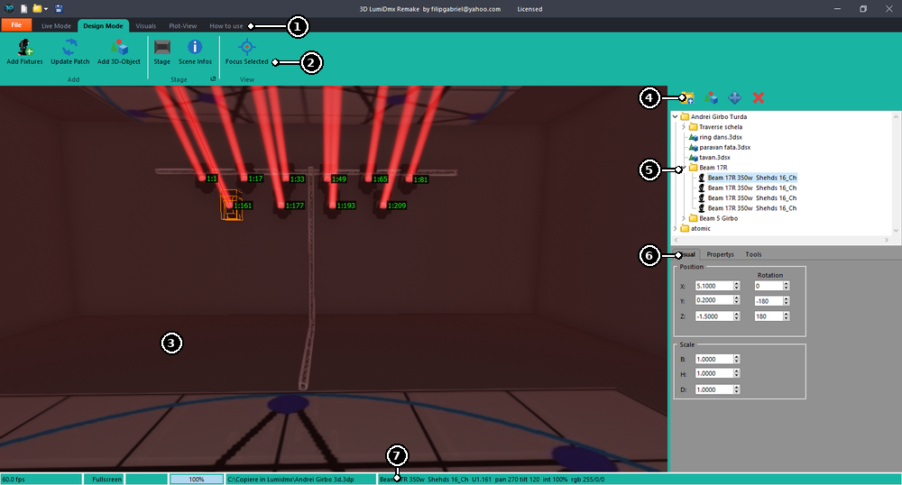
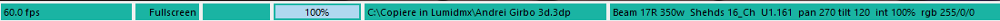
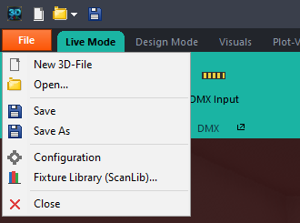

For: FullPlayer
3D LumiDmx Remake shows the fixtures of the patch on a stage in 3D, with the light that LumiDMX Remake sends: the beams, the colours, the gobos, the prisms and the movements. A show can be prepared and checked away from the room, and the 3D picture can be saved for the client or for the crew.
The order does not matter: the 3D can be started before or after LumiDMX Remake. It reads the light of all 16 universes directly from LumiDMX on the same computer (see Live Mode and DMX Input for Art-Net from another computer).
The 3D program has its own activation key, separate from the one of LumiDMX Remake. It is kept next to the program in 3D LumiDmx Remake.json, with the other settings of the 3D.

Andrei Girbo 3d.3dp in Design Mode: one fixture selected (orange frame), its address on the stage.
| 1 | File and the five tabs: Live Mode, Design Mode, Visuals, Plot-View, How to use. The buttons at the very top: new, open (with the last used projects under its arrow) and save. |
| 2 | The buttons of the tab that is open. Each tab is explained on its own page (see the table below). |
| 3 | The 3D view. Left drag turns the camera, right drag moves the picture, the mouse wheel brings it nearer or further. |
| 4 | The four buttons over the list (Design Mode): new folder, 3D object, DMX transformation node, delete. |
| 5 | The list of the scene: folders, 3D objects (stage parts, truss) and fixtures. |
| 6 | The pages of what is selected: Visual, Propertys, Tools. |
| 7 | The status bar (see below). |
The list and the pages on the right are shown in Design Mode. In Live Mode the 3D view takes the whole window.

| Part | What it shows |
|---|---|
| 60.0 fps | How many pictures a second are drawn. It is shown all the time, in every mode. |
| Fullscreen | A click hides the tabs and makes the window full screen, in Live Mode. Another click brings the tabs back. |
| 100% | How much of the project is loaded. |
| the path | The project that is open: its name and its folder. |
| the last part | The fixture selected: its name, universe and address (U1.161), pan, tilt, intensity and colour (rgb). Notes such as "saved" or missing profiles also appear here. |

| Item | What it does |
|---|---|
| New 3D-File | An empty scene. |
| Open... | Opens a 3D project (.3dp). The last used ones are under the arrow of the open button at the top. |
| Save / Save As | Saves the scene: the stage, the objects, the fixtures with their place and address. Nothing is saved by itself. |
| Configuration | The quality of the picture and how the light is read. See Visuals and Configuration. |
| Fixture Library (ScanLib)... | Opens a folder browser: choose the folder that holds the fixture profiles (.lfi2). Its subfolders count too, so a library split by manufacturer works. The 3D takes the beams, colours, gobos and prisms from these profiles. |
| Close | Closes the 3D program. |
| Page | What it explains |
|---|---|
| Live Mode and DMX Input | Watching the show: camera, rotation, screenshot, views; where the light comes from (LumiDMX or Art-Net). |
| Design Mode | Building the scene: adding fixtures, Update Patch, objects, folders, the stage; moving, turning, arrays. |
| Visuals and Configuration | Ambient light, haze, beam range, bloom, shadows, quality, the realistic engine. |
| Plot-View and How to use | The black and white plan of the rig; how the 3D reads the profiles. |